Sonic-R
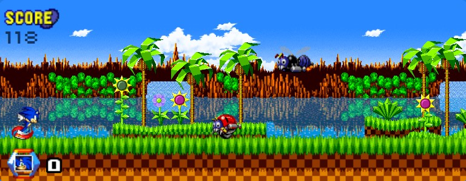 Sonic-R/Sonic Runner (you can choose how to call it), is a fan-project developted by
PlopesK using HTML, CSS and JS, based on the
Dino Game from Chrome.
This project was created with love for the Sonic franchise, with no intended monetary values.
I hope I can still update the project with time, adding new playble characters, new stages, even new mechanics!
Development
The idea of the project is very simple, but it demanted a lot of work since I wasn't used to the JS
logic (I already had a lot of knowledges about HTML and CSS), so it was really useful to motivate me
to study more!
To develop the project, first I searched a lot to see how different ways people recreated the Dino game from Chrome,
so, instead of copying one and just changing specific lines, I decided to try and create my own logic for this game.
(so probrably the code isn't writed in the best way possible, since I'm technically only a beginner using JS).
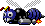
Even if it isn't the most well-coded project, neighter the most impressive or something a-like, I'm still proud with the result! And I'm certain that I learned a lot producing it :)
The project is mainly a love letter from a fan to others fans of the Sonic franchise! It demanded a lot of hard work to be created (but still, it was really fun to develope), so I hope others can find something useful in it or have fun playing :D
But then I had the idea to change that to 3, since it would make the game more enjoyable (in my opinion ඞ).
In the beginning, the life system would be indicated by 'Rings' instead of 'Lifes', and an animation would be activated when you had only 1 life
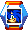
I changed it because it didn't made sense... Like, in the Sonic Franchise you don't lose 1 Ring per hit, you lose ALL of them with 1 hit. So changing it for Lifes would be more accurate!
Maybe at some point i'll add a rings system. Who knows?
I made it like that because (in my opinion ඞ) it would be more fun to have to be prepared all the time for a attack than just having to wait till the obstacles are fast enough to be challenging.
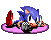
Hope everyone can enojoy it more like that too!
It would only be later added because of, at some points, how enemies would completelly cover your passage, forcing the player to take a hit...
The second reason was because (in my opinion ඞ) a Double Jump mechanic would turn the game more enjoyable, just because the player would have different mobilitys options!
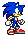
Sprites
There's only an section focused on sprites because I wanted to tell how annoying was to cut and implement those graffics :,)
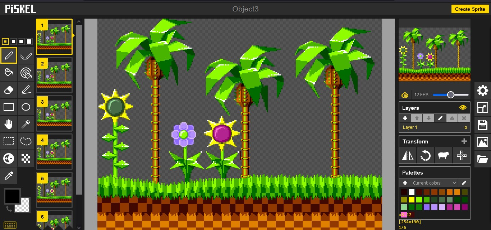
I had to install and cut every single sprite manually to recreate the stages and actions made by the characters.
For that, I used the Piskel website to create every gif and even modify some sprites to fit the project.
Most of the sprites where cutted from Sonic the Hedgehog 1, but the Sonic model is a mix between many sprites of Sonic from the Sonic Advance Series and Sonic Battle
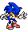 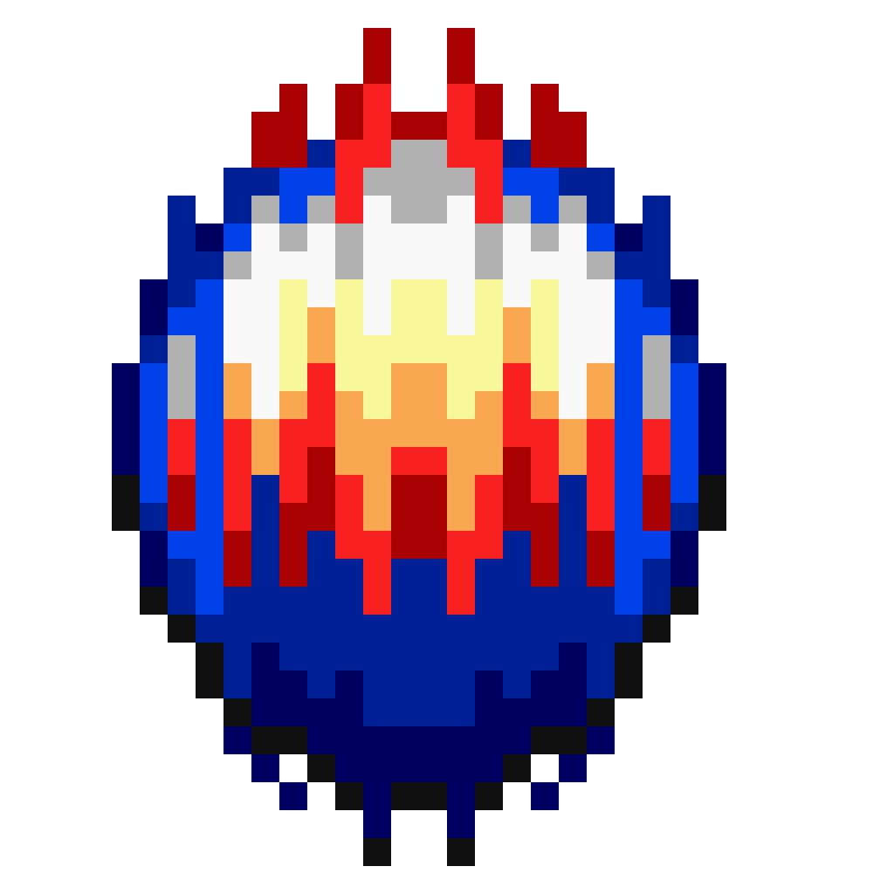 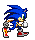 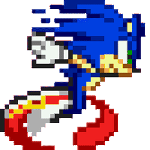
Most of the spritesheets were downloaded from the Spriters Resource website, so a lot of thanks to everyone who uploaded those sprites, since that helped a lot :D
Like, it has 28 Frames, it's A LOT.
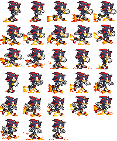

It was really painful to create this character since all sprites were taken from Sonic Battle...
But since he's one of my favorites, it was worthy to do :)
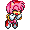
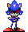
But still, there's sprites taken from Sonic CD! Sprites that I had to modify the color scheme to fit the same vibrant colors from the hackroom...
The Hackroom Sprites
Sonic CD Sprites
Curiosities
Both Sonic-R and Sonic Runners are already existing Sonic games!
Sonic-R was a racing game developed for Sega Saturn and ported to many collections of games from the franchise, for example the Sonic Gems Collection for Playstation 2.
As a kid I played it a lot and loved everything about it, even if the critics didn't liked it very much :,(

Sonic Runners was an free mobile game that ended service for the creation of Sonic Runners Adventure, a paid mobile game with didn't made that much success.
It's really sad that it ended 1 year after lauching :,/. It was a really fun experience, would be glad if it returned someday. But, even if it didn't returned officially, Sonic Runners received a fan-project called Sonic Runners Revival, wich is an amazing work made by fans to recreate Sonic-Runners!
And the 'Sonic Team' soundeffect was originally utilized on the Sonic Team Logo from 1997!
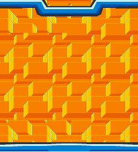 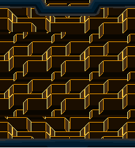
The Dark Mode version is an edit made by me! (I think it looked very dope lolඞ).
The 'Select a Character' was an edit made by me based on the 'Please Select a Player Character' from Sonic Advance 3!

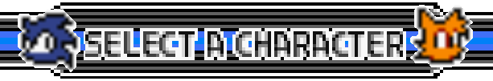
Furthermore, the 'Stage Select' image was taken from Sonic CD port for PC!